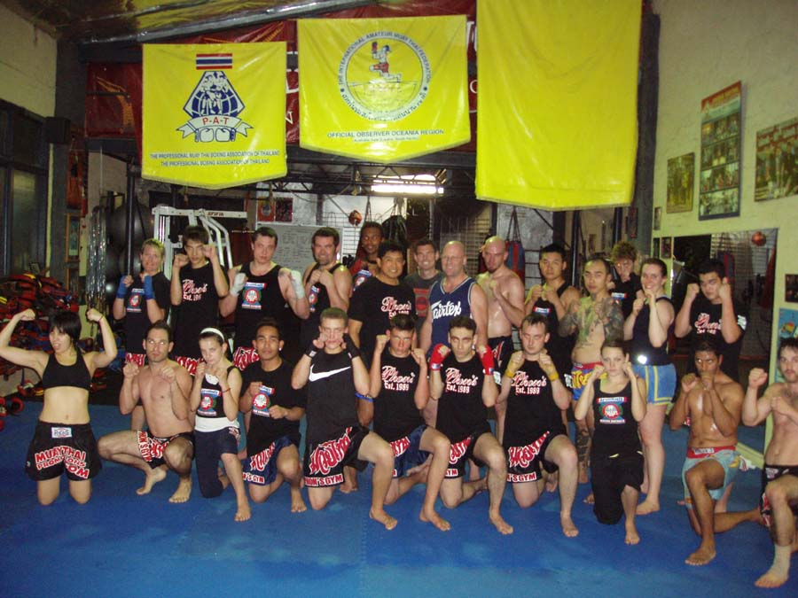
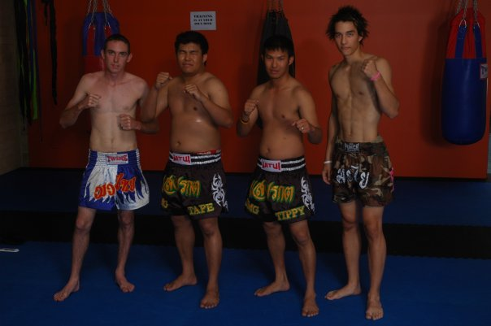
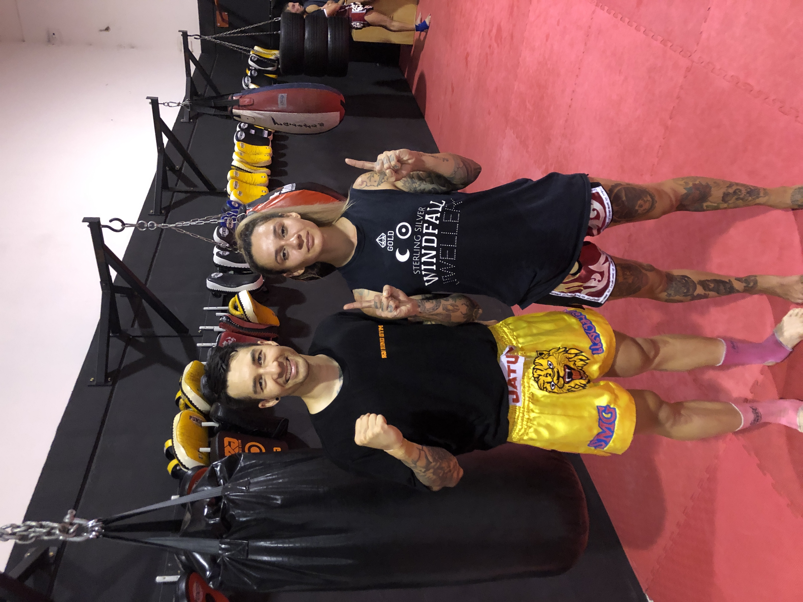
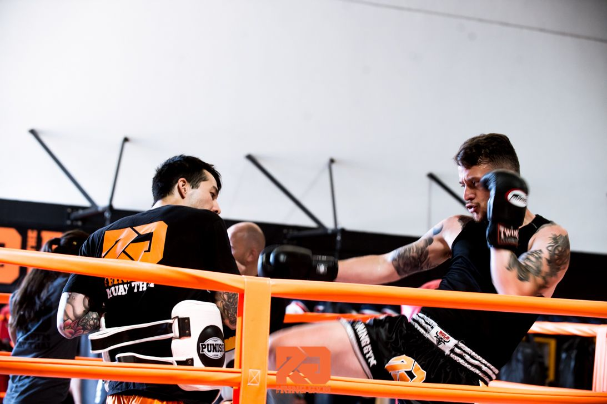
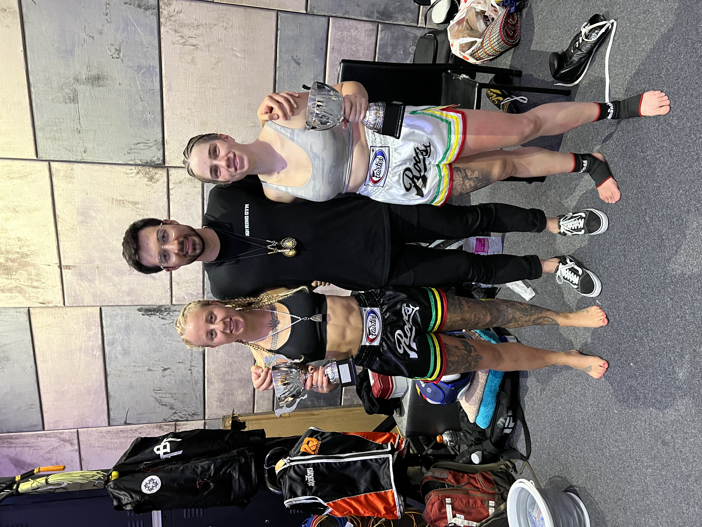
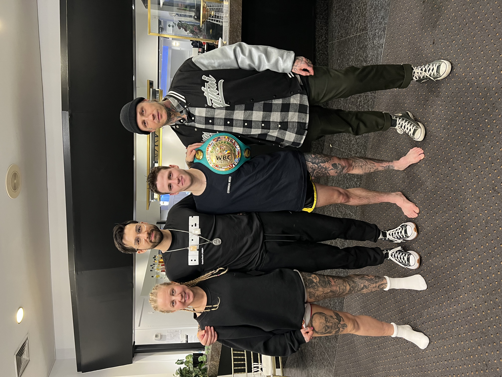
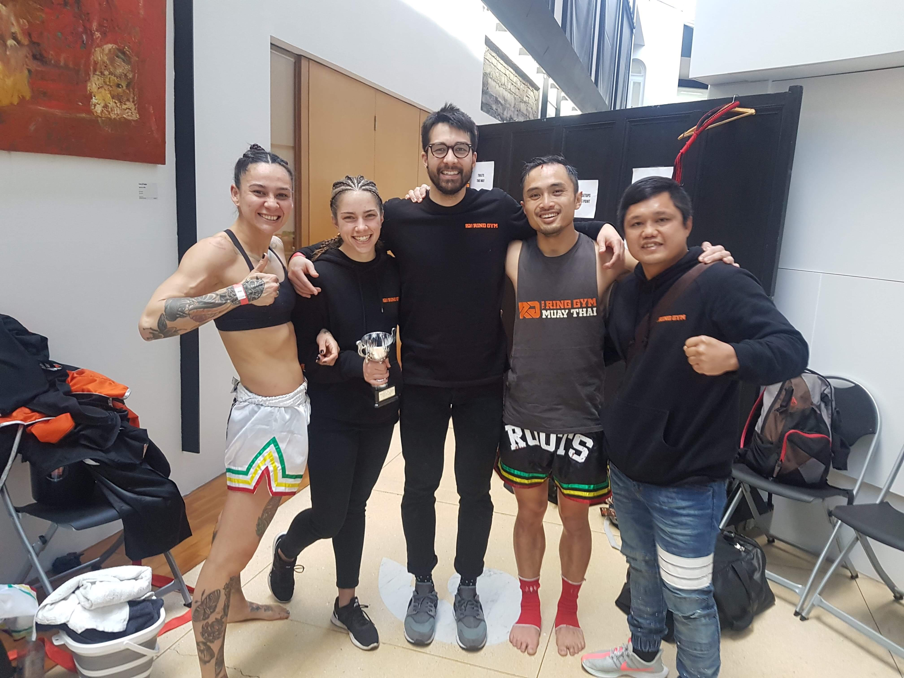
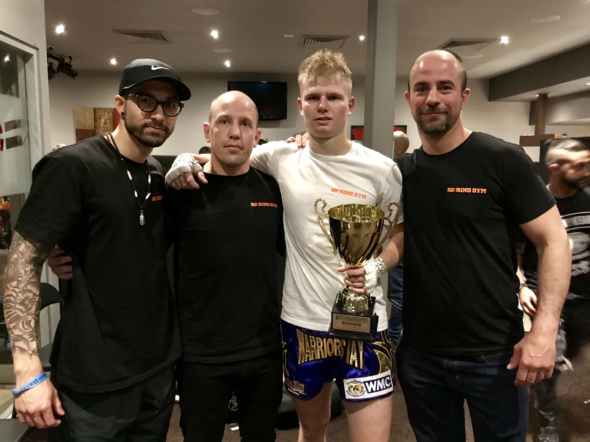

Muay Thai
{kind=link}
Phons Gym
My Muay Thai journey started back in Perth in 2004. I trained 5-6 days a week, going straight to the gym after school or work. Through countless repetitions and years of dedication, I started to grasp the bigger lessons in life—what truly mattered and what didn’t. I won’t bore you with the deep philosophy, but Muay Thai taught me discipline, resilience, and self-awareness. By 2010, I was coaching juniors and young adults at just 19 years old. With nearly six years of experience under my belt, I felt a sense of duty to give back to the community. I became a full-time coach after work, helping to nurture a new generation of fighters.
{kind=link}
Sangmorakot
Over the years, the gym I coached at crowned state champions and even world titleholders. Under the guidance of my head coach, Phon Martdee, I took pride in being part of their journey. Eventually, I extended my support to family friends of Phon, Tip, and Rob, who opened a gym in O’Connor. They asked me to be the head instructor, and while there’s an unwritten code in Muay Thai that fighters and coaches usually stay with one gym, our bond of friendship and mutual respect made the transition smooth.
The gym flourished, and we built a strong reputation. But in 2015, my journey led me to Melbourne. It was an emotional departure—I had no idea what lay ahead, especially in terms of Melbourne’s Muay Thai scene. Around that time, the UFC and MMA were starting to boom, and Muay Thai wasn’t as prominent as it had been back in Perth.
{kind=link}
A Year of Setbacks and Rediscovery
2017 wasn’t my ideal year. For the first time in my life, I was hit by a car—T-boned while cycling. It’s an experience I’ll never forget. The lengthy recovery off the bike took a toll on both my physical and mental health. Being away from riding felt like a huge loss. But during that time, I reflected deeply and decided I wasn’t ready to give up. Instead, I reconnected with another passion of mine—Muay Thai.
The Ring Gym
After the crash and during my recovery, a friend introduced me to "The Ring Gym." When I met the head coach, Andy Colgrave, I felt an immediate connection. The gym’s atmosphere reminded me of Sangmorakot, the gym I had left behind in Perth. It turned out that I had watched Andy fight years ago at one of Phon’s shows. I offered to help out at The Ring, holding pads for anyone who needed support, just as I had done back in Perth—no payment, just me giving back to the community.
 {kind=link}
{kind=link}
Gratitude
What started as a simple offer of help turned into something much bigger. Days turned into months, and months into years. The Ring Gym has become more than just a place to train—it’s a community. From kids to young adults, women to men, the encouragement and support everyone gives one another have been exactly what I needed.
Muay Thai has been an incredible journey for me, and I hope to continue it for as long as possible.
   {kind=link}
{kind=link}
{kind=link}
{kind=link}